Superfície Desordem
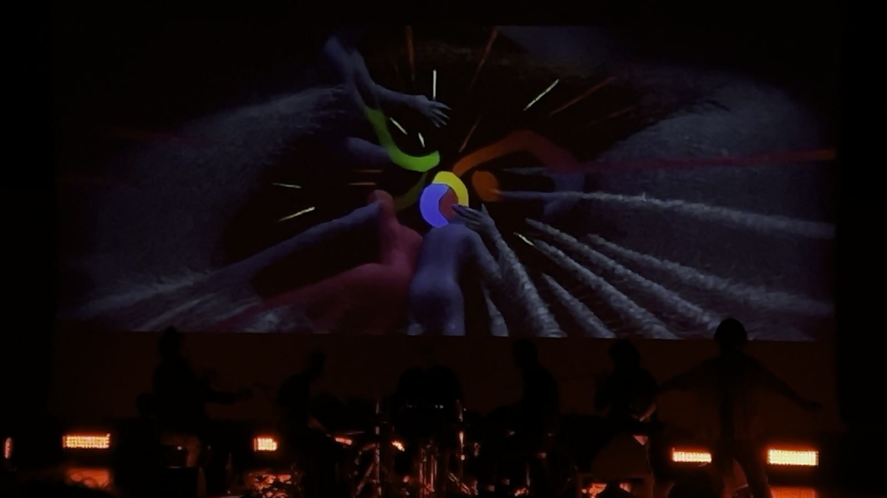
Superfície Desordem is a live audiovisual performance in which sound and image emerge from the same generative process. Jonathan Uliel Saldanha’s sonic architectures — dense, physical, built from brass and feedback — drive neural networks that produce projected imagery in real time. The visuals are not illustration. They are a parallel surface: figures dissolve into abstraction, landscapes fold into bodies, the boundary between what is seen and what is heard becomes unreliable. The title names the condition — a disordered surface where sensation outruns interpretation.

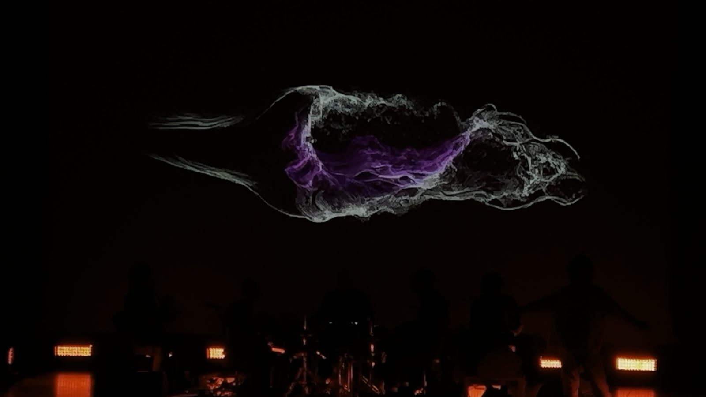
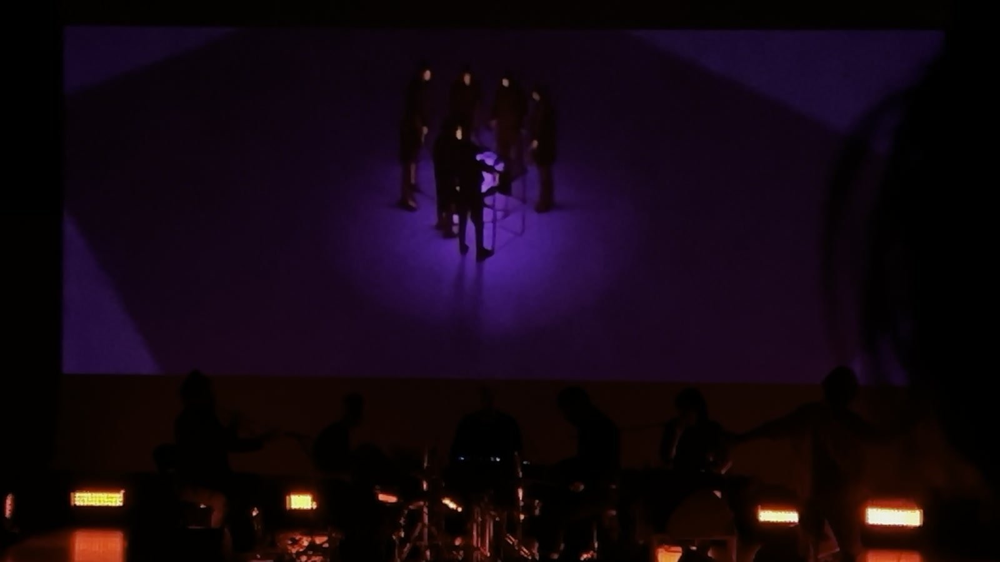
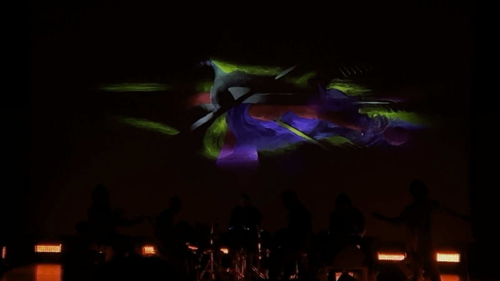
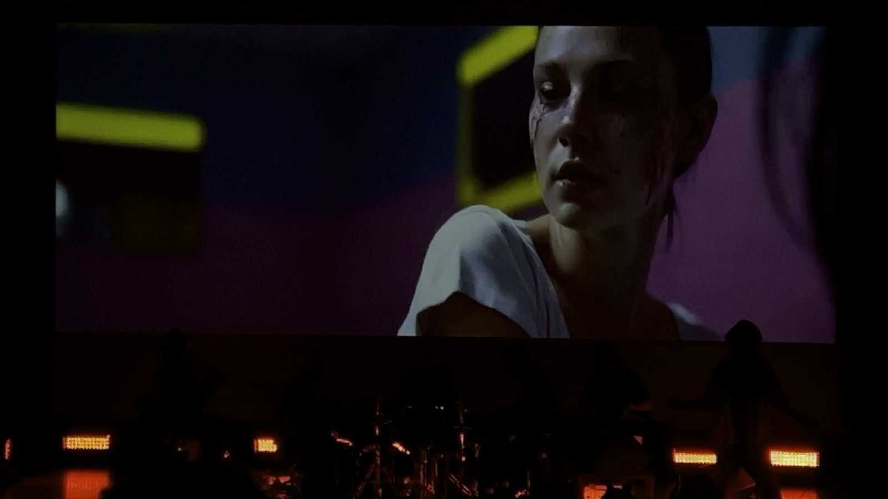
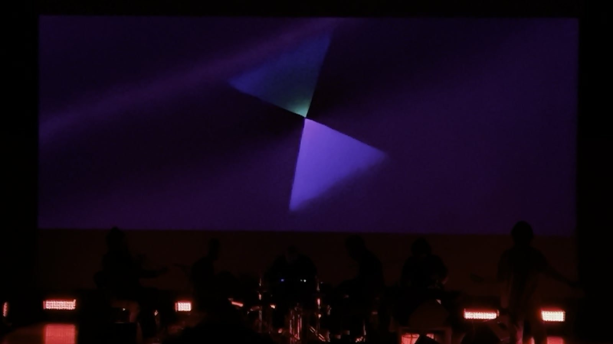
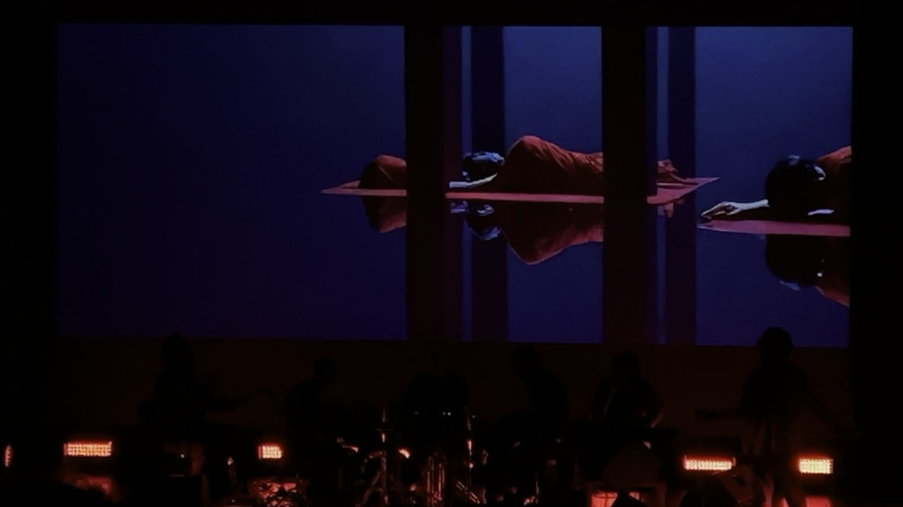
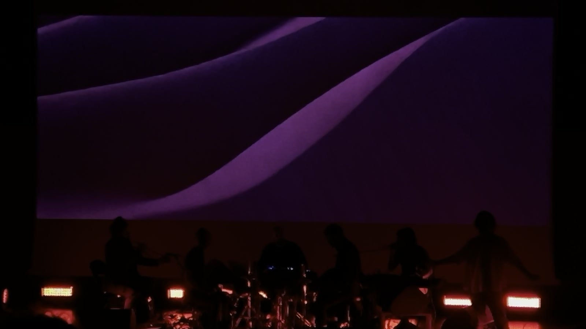
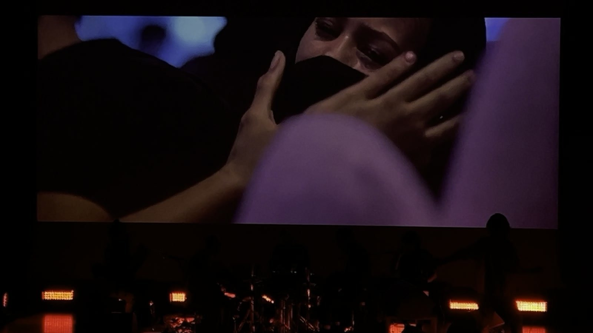
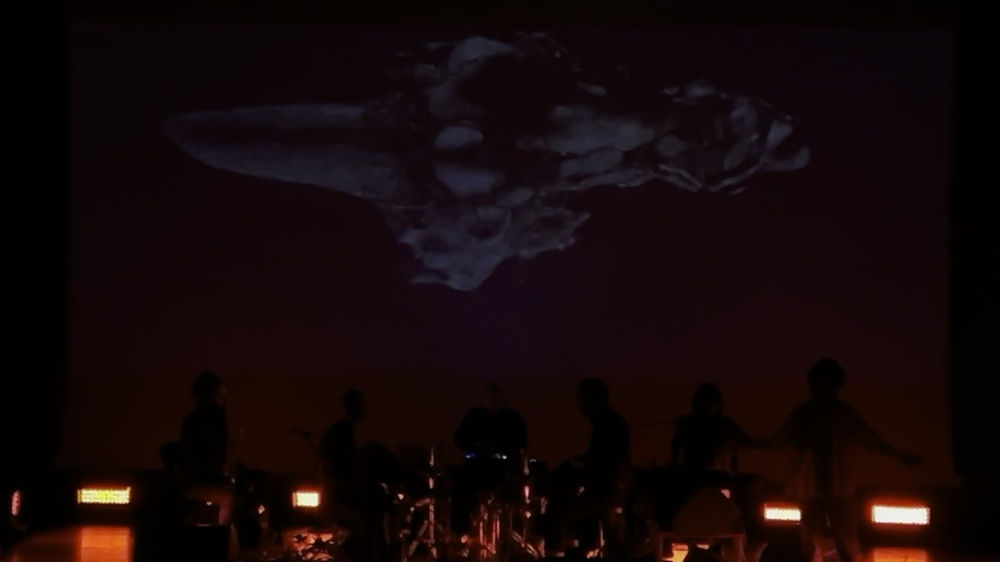
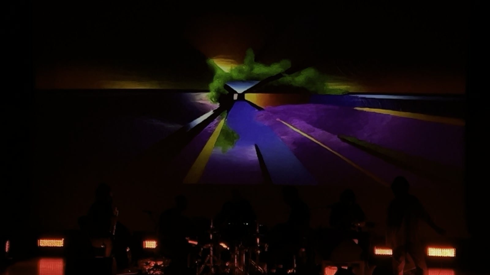
Collaborators
Jonathan Uliel Saldanha (sound, direction), Zachary Mainen (generative visuals)
Context
Saldanha’s work explores the physicality of sound — architectures of vibration that act on bodies before they reach the ear. Superfície Desordem extends the collaboration begun with Atavic Forest, where Saldanha created the sonic environment for a generative AI forest installation. Here the relationship inverts: sound leads, and the visual surface follows.
Related